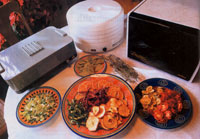
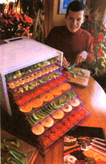
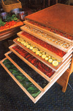
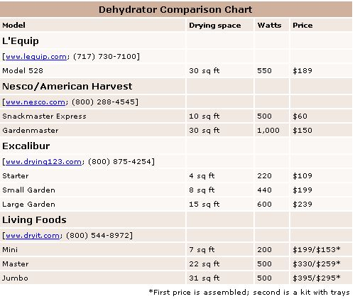

When I lived in California, land of eternal sunshine, preserving food by drying was virtually effortless. Using big redwood trays salvaged from an old prune orchard and spread out on a huge barn roof in full sun, hundreds of pounds of peaches and pears were dried each summer. We also dipped and dried our own prunes and figs, made raisins from seedless grapes, and dried the walnut crop in the fall for winter storage. In the shade of a big fir tree, I dried and processed all our own herbs from the garden.
Life in the humid Midwest, where I now live, is another matter entirely. Even the thin leaves of basil start to mold on the drying trays unless I am extremely careful. I tried using the electric oven and, for wetter fare, the warming oven of the wood cookstove, but space limitations and the difficulty of controlling temperature stymied my efforts. Finally, the promised success of electric food dehydrators got the upper hand. I decided to find out just how well they worked.
Many different electric dehydrator models are available; I settled on four that best represent the various designs available: L'Equip's Model 528, Nesco/American Harvest's Gardenmaster, Excalibur's Large Garden and Living Foods' Jumbo dehydrator.
Home-food dehydrators fall into two categories: those with stackable trays, and those constructed of a rigid box with removable shelves. Size is a factor; most fit on a countertop, but larger models are free-standing and require more space. Some models have base-mounted fans that move hot air vertically; one has a rear-mounted fan for moving air horizontally; yet another uses convection drying, with no fan at all.
I put these four different models through their paces during the peak of the humid harvest season here in Iowa. Each dehydrator dried lots of herbs and vegetables with comparable ease, but the fleshy crops, like tomatoes and peaches, put the dehydrators to the ultimate test, determining their maximum capacity, efficiency and overall effectiveness.
L'Equip's Model 528, which has rectangular trays, and Nesco/American Harvest's models, with round trays, are plastic stackable units with base-mounted fans. The L'Equip has six trays, expandable to a stack of 20; two of the Nesco/American Harvest models have four trays, expandable to 12. Nesco's Gardenmaster, which is designed for less bulky harvests such as herbs or dried flowers, can accommodate up to 30 trays.
While these models may stack up to 30 inches tall, they have a small footprint and consume little counter space. They also provide the least expensive way to get started with food dehydrating, but they all share one big limitation: Uneven heat distribution in the stack means that the trays closest to the heat element and fan dry much faster than those at the top of the stack. Diligent tray rotation is critical, especially if very fleshy foods are being dried. And while perfectly suitable for drying fruits, vegetables, fruit leathers, herbs and jerky, these machines cannot readily be adapted for any of the other uses the box-and-shelf models can claim.
I tested two rigid box designs with removable shelves that can be adapted for other warming or drying uses in addition to food dehydration: Excalibur's nine-tray large Garden model, with 15 square feet of drying space, and Living Foods' Jumbo model, with nine trays and 31 square feet of space.
Excalibur's dehydrator designs position the heat source and fan at the back of the shelves instead of beneath them. Hot air blowing across the shelves eliminates the bothersome need for tray rotation. And the Large Garden model is big enough, with some shelves removed, to allow other uses, such as leavening bread, culturing yogurt or drying bulky items.
Instead of using a fan, Living Foods' dehydrators rely on convection drying. Heat, generated by a heating element mounted at the base of the box, rises through the trays. Living Foods' founder Jen MacManiman says a benefit of convection drying is that it eliminates the possibility of contaminating foods with dirt that fans can suck into a dehydrator. However, placing the fan-powered dehydrator in a clean space remedies that potential problem.
Convection heating allows silent operation and less use of electricity but it also takes twice as long to dry bulky, moisture-laden foods like tomatoes and peaches. The longer the drying time (especially during periods of high humidity), the more the dried product's flavor and keeping quality are reduced.
Despite their slower drying time in humid conditions, Living Foods' dehydrators may be the most versatile on the market. Besides making yogurt and leavening bread, these dehydrators also can soften honey or butter, re-crisp crackers or popcorn, sprout seeds or hatch chicks. The company claims its machines have been used to dry not only fruits, vegetables and meats, but also flowers, paper mache crafts, fine lingerie, rain-soaked boots and gloves, pasta, freshly glued items, children's artwork, tie-dyed clothing and water-damaged books or papers.
As long as I avoided overloading the Living Foods' Jumbo with wet items during extremely humid conditions, I successfully produced an abundance of dried food. And the quiet, fan-free operation was an added bonus.
If you're considering drying speciality items, investigate which models can accommodate your needs. Stick-proof fruitleather sheets, tray screens, jerky spices or kits, and very good handbooks, including recipe books, are sold by most dehydrator dealers. Besides these accessories, Excalibur also sells a variety of peelers and slicers, and a 156-page, illustrated book, Preserve It Naturally II: The Complete Guide to Food Dehydrating, which contains many unique recipes. Living Foods markets a heavy-duty tray to support weightier jobs like yogurt-making; a grow box for starting seeds; a sprouting tube kit; and their food dehydrating handbook, Dry It - You'll Like It!
All of the dehydrators I tested have their appropriate applications, and all performed well under most conditions. Determine your needs, space limitations and budget before you buy. When it comes down to preserving food flavors and quickly drying fruits, vegetables and meats, especially when fully loaded and under humid conditions, the Excalibur Large Garden model won my highest praise. Its rear-mounted fan, in my experience, simply did the best job.
The Metropolis Beef Jerky Company of Chicago claims that the Excalibur far out paced other models for making jerky. Five machines with eight trays each produced 3 1/2 pounds of jerky in four hours, while the three Excalibur models tested produced 8 pounds in five hours, with a fraction of tray-cleaning time afterward. (Note: Making meat jerky is not as straightforward as drying fruits and vegetables. New, safer recipes for producing homemade jerky have been established following tests at Colorado State University that showed traditional methods may not destroy salmonella and E. coli bacteria in the meat.
Mechanical dehydration has restored the blessings of dried foods to my house. Jars of "un-sun" dried tomatoes and my very own Hungarian paprika now line my shelves, along with all sorts of dried fruits and other vegetables. Besides the satisfaction of having a full pantry, my family and I also benefit from the nutrition dehydrating preserves. And, calculating all the attendant costs, using a mechanical dehydrator costs half as much as canning and is almost seven times cheaper than freezing. Certainly, it's not as cheap as the sun, but, hey, we can't all live in California!
Highly recommended by the Mother Earth News editors: The Solar Food Dryer book, by Eben Fodor. If you are thinking of building a solar food dryer, or you just want to learn the basics of how to preserve food by dehydrating, this is the best book available. Includes full details on how to build a very effective solar-powered dehydrator. Order now.
|
 DAVID CAVAGNARO Dehydrators come in many shapes and sizes to meet your food-drying needs. (Left to right: L 'Equip Model 528, Nesco/American Harvest's Gardenmaster and Excalibur's Large Garden dehydrator) |
 DAVID CAVAGNARO The Excalibur Large Garden dehydrator, with its rear mounted fan, performed exceptionally well in our trials. |
 DAVID CAVAGNARO Box-and-shelf dehydrators, like the Living Foods' Jumbo dehydrator pictured here, accommodate a bountiful variety of garden goodies. |
|
 DAVID CAVAGNARO Cost comparison of a variety of dehydrators. |
|
|